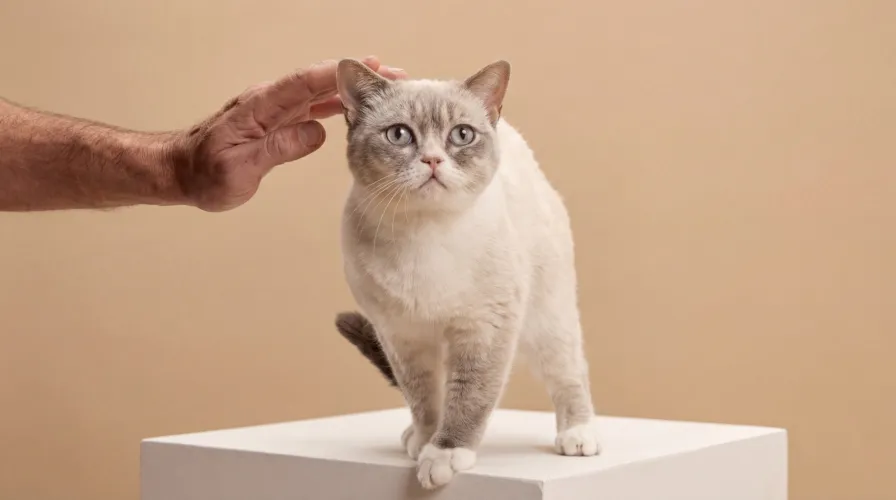

Mizzie
Mizzie es una gata cariñosa de 7.5 años, y busca un lugar lleno de amor.
TOMARU REFUGIO ANIMAL

Mizzie es una gata cariñosa de 7.5 años, y busca un lugar lleno de amor.
Shayo es un gato serio y tranquillo de 9 años, y busca su familia.
Kukie es una gata de 8 años con diabetes, y busca su casa.
Zayla es una gata cariñosa de 6.5 años, y busca su hogar.
Fanta es una gata activa y juguetona de 2.5 años, y quiere juntarse a una familia.
Brittie es una gata seria y silenciosa de 4 años, y quiere su casa.
Coujo es un perro tranquilo y cariñoso de 7 años, obediente y perfecto para familias.
Charlot es una perrita juguetona de 4 años, pero nunca mastica zapatos.
Chester es un perro de 9 años con artritis, y será su amigo fiel.
Crocus es un perro diabetico de 5 años, que busca a su familia .
Estos hermanitos de 4 meses serían encantados a encontrar una casa juntos.
Jay, un perro serio y amable de 5 años quiere encontrar a su casa.